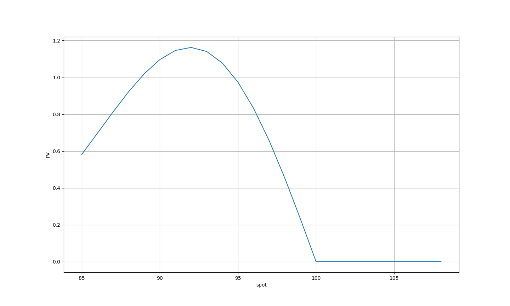
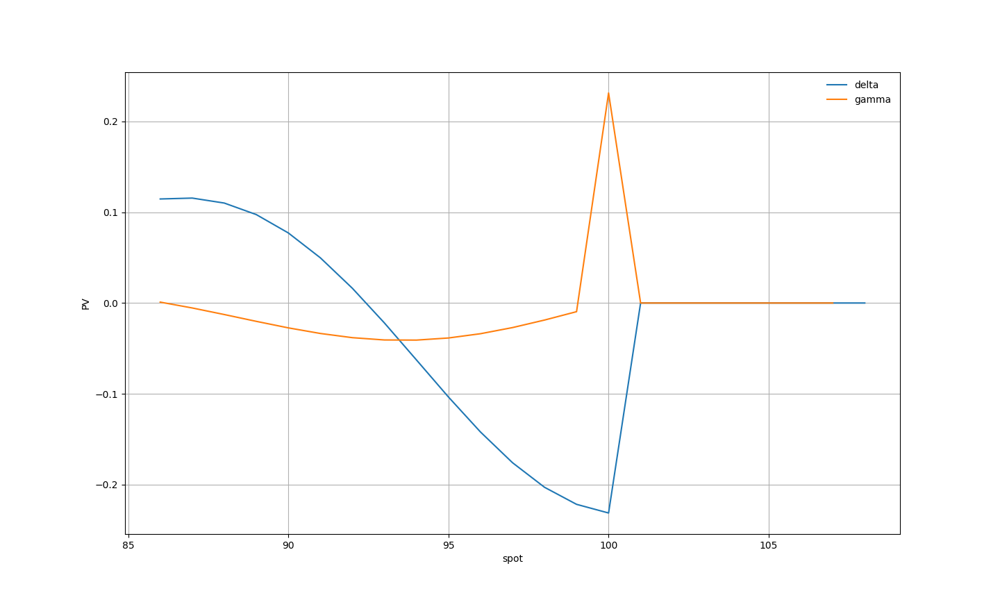
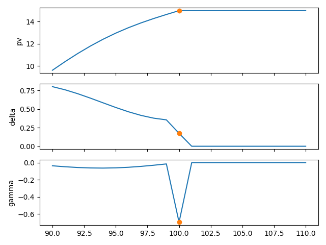

希腊字母¶
期权的希腊字母¶
期权的希腊字母用来表示在BSM模型下的期权价格对相关定价参数的敏感度，即期权价格对相关参数的偏导。本节列出常用5个希腊字母的定义，其他更多希腊字母请参考期权定价公式大全(page22 table 2-1)
名称 |
符号 |
定义 |
释义 |
Delta |
\(\Delta\) |
\(\frac{\partial f}{\partial S}\) |
标的价格变化1个单位时，期权价格的变化 |
Gamma |
\(\Gamma\) |
\(\frac{\partial^2 f}{\partial S^2}\) |
标的价格变化1个单位时，期权Delta的变化 |
Vega |
\(\frac{\partial f}{\partial \sigma}\) |
隐含波动率变化引起的期权价格变化，例如隐含波动率增加1%，在不考虑其他变化的情况下，期权价格变化为 \(1\%\times \text{Vega}\) |
|
Theta |
\(\Theta\) |
\(-\frac{\partial f}{\partial T}\) |
随着时间的推移不断临近到期，期权价值的损耗 |
Rho |
\(\rho\) |
\(\frac{\partial f}{\partial r}\) |
期权价格相对利率变化的敏感度 |
欧式期权的定价公式相对简单，期权定价手册大全给出了相关的偏导，也即欧式期权希腊字母的解析解表达。 而实际上，大多数期权要么没有解析解表达式，即便存在解析解表达式的，由于公式本身极其复杂，其偏导的推导更是无从下手。 对于这一类期权的希腊字母，一般采用有限差分法快速实现。
备注
在计算数学上，符号计算是解决复杂定价公式求导的一种方案。通过计算机代数和链式法则，复杂的定价公式也可以求解出其精确的任意阶导数。 相关的计算机软件有 Maple, Mathematica 等，python也有 SymPy 软件包可以实现符号计算。
有限差分法求导公式¶
一阶偏导数¶
左导数¶
一阶精度
二阶精度
二阶偏导数¶
左导数¶
一阶精度
二阶精度
奇点问题¶
障碍期权由于障碍的存在，在临近敲入或者敲出的价格点位附近，其期权价值随挂钩标的价格变化的在此附近并非是处处可导的。
下图展示的是一个向上敲出看涨期权的PV随挂钩标的变化曲线。该PV曲线在敲出障碍的左导数（~-0.22）与右导数（0）并不相等，根据导数的定义我们可以知道，此处是 没有导数 的，这是一个奇点。
奇点对冲问题¶
从上图中我们可以看到，在100左侧，Delta的绝对值极速扩大（Gamma的绝对值很大），可一旦跨越100， 又迅速减少为0； 这给实际对冲操作带来了困难。需要一定的方式平滑Delta。
平滑Delta的方式之一就是加大步长法(平滑PV曲线)。对于向上敲出的障碍期权，可以在障碍价格附近约定一个区域，例如障碍左右2%的范围内(98~102)， 区间的Delta可以采用步长为2.5中心法求导, 使得计算Delta的样本点 一定 跨越障碍两侧。
平滑Delta的另一种方式是限制Gamma法。过大的Gamma，意味着当挂钩标的发生变动时，Delta对冲仓位的变化很大，从挂钩标的（对冲标的）的波动性、流动性以及交易成本等各方面考虑，这样都是存在较大的风险。于是我们可以设定Gamma上限（绝对值),以敲出时的Delta为终态，采用
\(\text{Delta}(S) = \text{Gamma}_{\text{upper limit}} \times (S-B) + \text{Delta}_{\text{KO}}\)
部分障碍期权的希腊字母¶
向上敲出看涨期权¶
期权条款¶
障碍价格 |
100 |
行权价 |
80 |
补偿 |
15 |
无风险利率 |
1.00% |
分红率 |
1.00% |
波动率 |
20.00% |
到期时间（年化） |
0.10 |
下图展示的是向上敲出看涨期权的PV随挂钩标的变化、DELTA随挂钩标的变化、GAMMA随挂钩标的变化的曲线。
